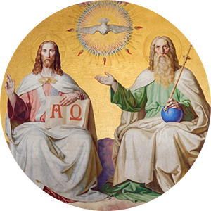
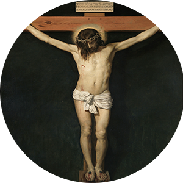
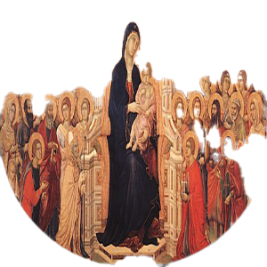
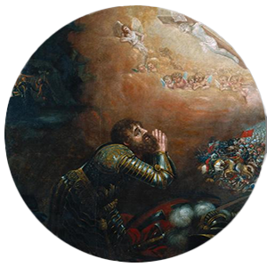

Bem-vindo ao “Ora et Labora”
Este site é um espaço dedicado à beleza da oração cantada. Aqui você encontrará os mais belos cantos gregorianos, usados por séculos na liturgia cristã para elevar a alma a Deus.
Canto em Destaque: Miserere Mei Deus
Um dos salmos penitenciais mais profundos, tradicionalmente entoado nas noites da Quaresma.
Cantos Gregorianos
Credo III

Te Deum
Anima Christi
Litaniae Sanctorum
De Pacem Domine
“Quem canta reza duas vezes.” — Santo Agostinho